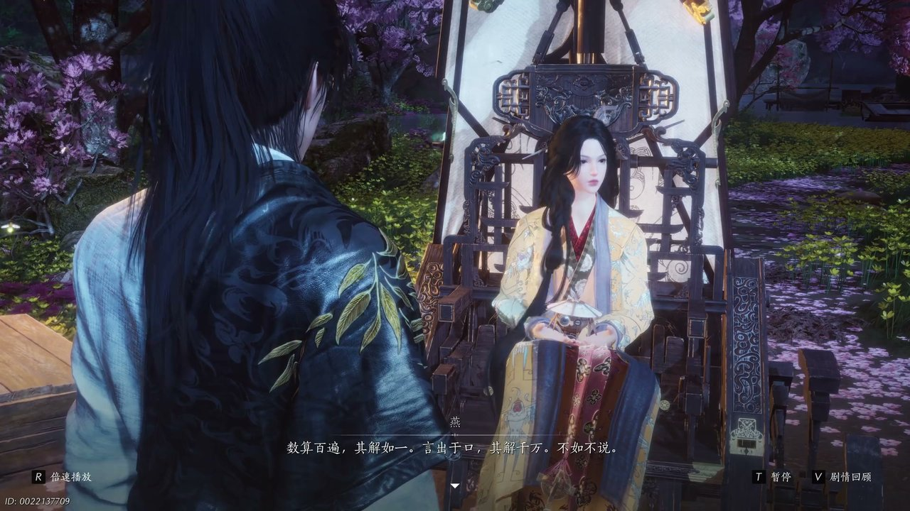
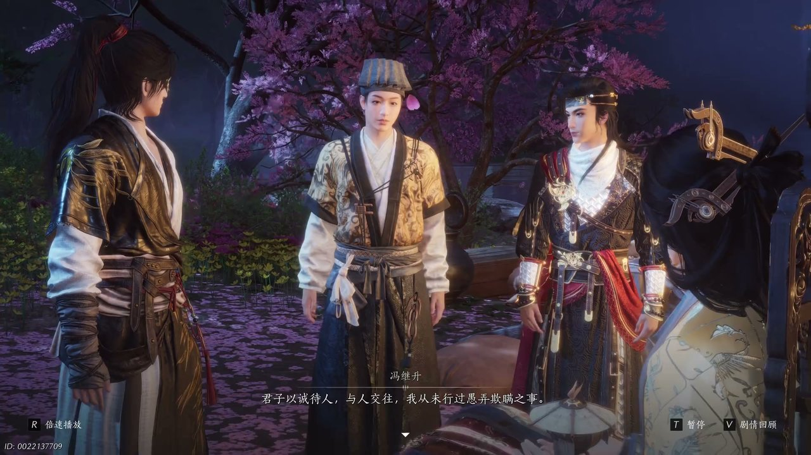
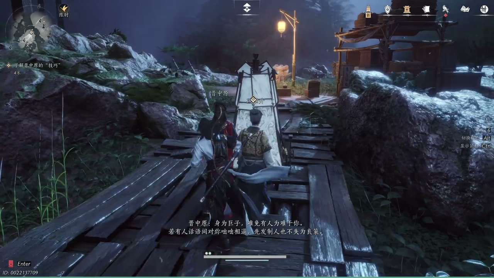
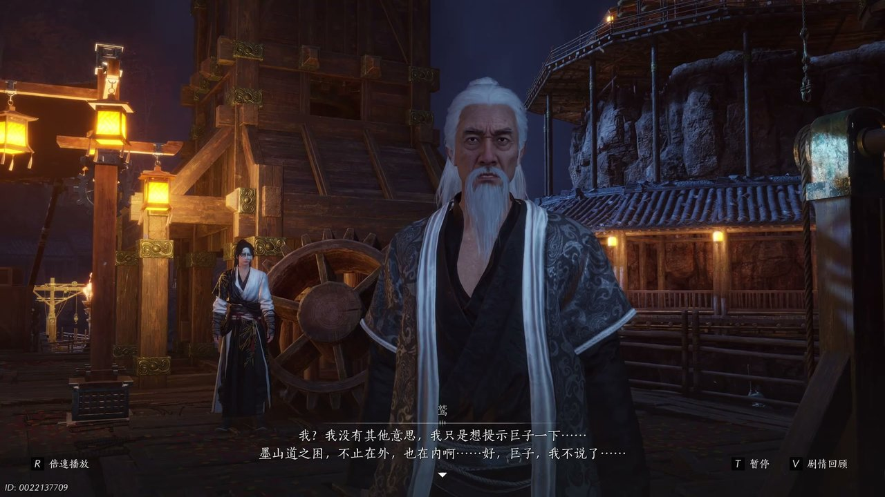
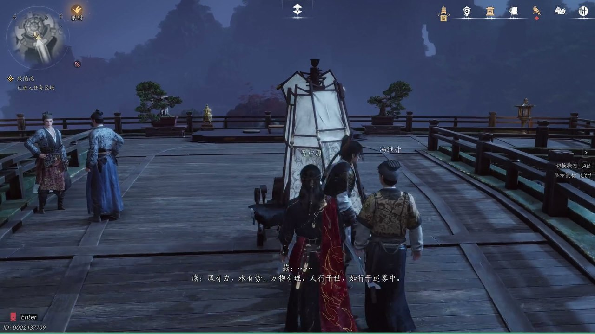

燕云背后的故事：第24集 司南剑客
燕云背后的故事：第24集 司南剑客

朋友们，上一集咱们说到——解开木鸟心结、巨子敞开心扉、追查红衣女子踪迹；新来的朋友可能纳闷，巨子已经信任少东家，可墨门内部依旧暗流涌动。简单说，少东家帮巨子燕修复坠落的机关木鸟，二人在悬崖边交心，约定一同追查潜入墨门的神秘外客。可他哪知道，长老之间各怀心思，乌金的秘密依旧被层层掩盖。这不，一行人打算前往墨城夜市，借着热闹场面躲开长老们的追问。

山间小路蜿蜒向前，石壁旁散落着废弃的墨门机关零件，微风卷着炭灰轻轻飘过。冯继升走在队伍前方，面露疑惑向巨子燕开口询问：“巨子我方才听闻，墨山道的石炭资源似乎颇为富裕，木炭石炭同位炭，为何石炭不能用呢。”巨子燕垂着眼，指尖轻轻摩挲腰间机关构件，缓缓道出缘由：“石炭寒毒，燃脂有毒，烟且易碎易爆，若提前烧尽毒烟则损耗甚高。”晋中原缓步跟上，接过话语补充古时世家炼制石炭的繁琐工序，直言这般耗费唯有大族才可承担，寻常百姓依旧只能依靠木柴取暖。少东家静静听着几人交谈，思索片刻之后提议一同前往墨城夜市散心，巨子燕面露迟疑，不愿在人群面前展露自己。

小路尽头已然能望见夜市林立的灯火，人流熙攘喧闹不已，少东家停下脚步，告知众人前方八百步左转便是墨城夜市，想要在此与众人分开行走。巨子燕连连拒绝，觉得夜市之中墨门弟子居多，自己不善言辞，难以应对众人的追问，还坦言乌金现世不久之后便会酿成灾祸，不愿过多提及。少东家看出巨子燕内心的畏惧，开口劝慰：“但是总这样逃开也不是办法，有时候吵架也是沟通的一种方式，什么都不说反而会加深误解。”晋中原在一旁微微摇头，认为人心复杂，并非三言两语就能轻易化解，少东家却不以为然，觉得只需略施小计，便能轻松应对长老与弟子的盘问。

几人驻足在夜市入口的石阶之上，周围偶尔有路过的墨门弟子投来好奇的目光，少东家兴致勃勃地传授应对盘问的法子。冯继升神色认真，认真表态：“君子以诚待人，与人交往，我从未行过愚弄欺瞒之事，只是有些时候我总是听不懂对方言外之意，偶有答非所问。”少东家笑着调侃冯继升独有的昏厥之术，称这便是最好的装傻技巧，遇到难以回答的问题，遵从本心便可，听不懂的话语不必强行回应。巨子燕听后不由得露出一丝笑意，坦言自己的弟弟也十分擅长撒娇耍赖，言语之间难得流露出几分温情，气氛瞬间变得轻松柔和。晋中原站在一旁，一脸无奈，直言自己十分羡慕少东家这般随性的性子。

夜市之内人声鼎沸，各式机关小铺沿街排布，木头构件碰撞发出清脆声响，晋中原接连道出三种应对盘问的办法，装傻、耍赖以及恶人先告状先发制人。他缓缓说道：“身为巨子难免有人为难，若有人话语间对你咄咄相逼，先发制人也不失为良策。”少东家连连称赞晋中原深谙处世之道，还主动做出手势标记三种技巧，叮嘱巨子燕若是不知如何回应，便依照自己的手势行事。就在几人准备走入夜市深处时，鹳长老匆匆寻来，神色焦急地追问巨子燕应对墨门危机的水拒之法，巨子燕只是简单提及此法可解危困，不愿多说细节，鹳长老无奈之下只能先行离去，约定后续再召开长老议事。

鹳长老刚离开不久，鹞长老便快步走来，神色严厉地斥责巨子燕身为墨门主事之人，不该孤身四处走动，容易被暗处的穷奇师之人挟持。紧接着鹫长老也赶来觐见，表面上是关心巨子燕的安危，实则旁敲侧击打探乌金的下落，还刻意提醒：“墨山道之困不止在外也在内呀。”巨子燕目光沉静，一眼看穿鹫长老的心思，鹫长老察觉自己心思败露，神色略显尴尬，匆匆告辞离去。一旁隐藏身形的少东家暗自点头，明白墨门内部的派系争斗，比外部的穷奇师威胁更加棘手，几人顺利躲开一众长老，顺利融入热闹的夜市人群之中。

大批年轻墨门弟子发现巨子燕现身夜市，纷纷围拢上前想要搭话，少东家立刻出手掩护巨子燕撤离，几人一路躲避弟子的围堵，顺着机关密道来到一处山崖之巅。站在悬崖边远眺，连绵群山尽收眼底，云海翻涌气势壮阔，冯继升忍不住惊叹眼前景色壮观。少东家向巨子燕询问，在她眼中何为真正的美好，巨子燕望着连绵山海缓缓回答：“风有力，雪有势，万物有灵，人行于世，如行于迷雾。”她认为美好并非安稳顺遂，而是毁灭之中诞生新生，这番话语让少东家十分不解，也更加好奇乌金背后隐藏的真相，少东家坦诚自己一行人并非觊觎乌金，只是想要帮助巨子燕化解危机。
这一集看下来，我最大的感受就是冰冷机关包裹着墨门众人温热的真心。上一集里我们只知道红衣女子踪迹不明、长老派系相互倾轧、巨子背负过往伤痛，到了这一集，我们摸清夜市暗流、学会处世巧计、寻得山崖秘境三条全新线索。红衣女子究竟藏身何处？晋中原为何突然离去？大眼迷阵之中藏着什么秘密？全部线索交织在一起，少东家察觉晋中原觊觎墨门宝库，巨子燕已然决定追查绣金楼的线索，少东家独自闯入迷阵追寻晋中原踪迹。下一集，大眼迷阵机关四起，晋中原露出真实面目。评论区大家觉得晋中原是不是穷奇师安插在内的奸细？关注不迷路，下一集解锁迷阵惊魂、内奸显露的精彩剧情！
关于我们
📱 公众号名称：三天游戏
✍️ 作者：曾三天
扫码关注公众号，获取每日最新资讯

商务合作与版权
商务合作 / 内容投稿 / 品牌推广
请关注公众号「三天游戏」后台留言联系
版权声明：本文由作者整理，转载需注明出处。